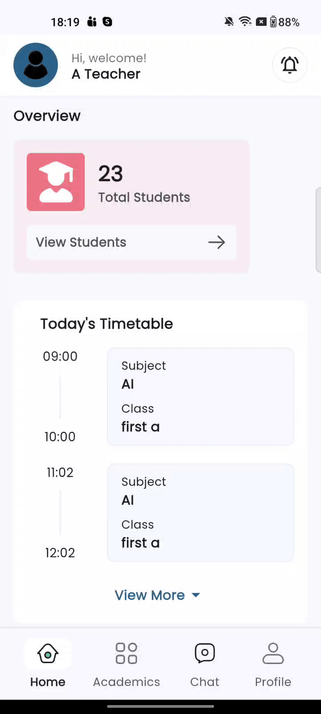

📋 Staff Attendance ✨ NEW FEATURE
This is a newly added feature in the latest version of medhasa Edu. It provides a comprehensive staff attendance management system with leave integration, automatic absence tracking, and payroll synchronization.
The Staff Attendance feature allows School Admins to record and manage daily attendance of staff members in a clear and structured manner. This powerful feature integrates seamlessly with the leave management and payroll systems, ensuring accurate record-keeping, consistent salary calculations, and streamlined administrative processes.
Overview
The Staff Attendance system is accessible through multiple platforms:
- School Admin Panel - For managing staff attendance from the web
- Staff Mobile App - For school admins to mark attendance on-the-go
School administrators or those with permission to manage staff attendance can mark attendance individually for each staff member or for multiple staff at once, with all updates saved together.
Key Capabilities
- 📝 Attendance Marking: Mark attendance as Present, Absent, or Half Day
- ⏱️ Half Day Specification: Specify First Half or Second Half for accuracy
- 🔗 Leave Integration: Automatic linking with approved leave records
- 🔄 Auto Leave Creation: Automatically creates leave entries for unplanned absences
- 📋 Optional Reason Field: Document reasons for absences or late arrivals
- 📊 Daily & Monthly Views: Review attendance patterns and data accuracy
- 🔒 Payroll Lock: Records become locked after payroll processing
Admin Panel Features
The Admin Panel provides administrators with comprehensive tools to manage staff attendance. Access the Staff Attendance module from the main navigation menu to manage all attendance-related activities.
1. ✅ Mark Staff Attendance
Record daily attendance for all staff members with a simple and efficient interface.

How to Mark Attendance:
- Navigate to Staff > Staff Attendance from the sidebar menu
- Select the Date for which you want to mark attendance
- View the list of all staff members available for that date
- For each staff member, select attendance status:
- Present - Full day attendance
- Absent - Not present for the entire day
- Half Day - Present for only part of the day
- If marking Half Day, specify:
- First Half - Present in the morning only
- Second Half - Present in the afternoon only
- Add an optional Reason for Absent or Half Day entries (e.g., "Came late", "Left early", "Personal work")
- Click Submit to save all attendance entries at once
Attendance Marking Features:
- 📋 Mark attendance for multiple staff members simultaneously
- 💾 Bulk save functionality for efficiency
- 📝 Optional reason field for documentation
- ✅ Real-time validation with leave records
- 🎉 Holiday auto-exclusion from attendance list
2. 📅 View Monthly Attendance
Review attendance patterns with a comprehensive monthly overview displaying status indicators for each day.

Monthly View Features:
Status Indicators:
- ✅ P - Present (Full Day)
- ❌ A - Absent
- ⏱️ HD-1 - Half Day (First Half Present)
- ⏱️ HD-2 - Half Day (Second Half Present)
- 📅 L - Leave (Approved)
- 🎉 H - Holiday
Review Capabilities:
- 👁️ Identify frequent absences at a glance
- 📈 Track attendance patterns over time
- ✅ Verify data accuracy before payroll processing
- 🔍 Filter by department or staff category
Benefits:
- 🎯 Quick identification of attendance issues
- ✅ Data verification before payroll
- 📊 Pattern recognition for HR decisions
- 👁️ Clear visual representation
📱 Staff Mobile App Features
School admins can also manage staff attendance through the staff mobile application for convenience and flexibility.
Mark Attendance via Mobile App
The mobile app provides the same powerful attendance marking capabilities as the admin panel.

How to Mark Attendance on Mobile:
- Open the Staff App and login as School Admin
- Navigate to the Staff Attendance section
- Select the Date for attendance marking
- View all staff members in a scrollable list
- Tap on each staff member to set their status:
- Present
- Absent
- Half Day (First/Second)
- Add reason if needed (tap on reason field)
- Tap Save to submit all attendance entries
Mobile App Benefits:
- ✅ Mark attendance from anywhere
- ✅ Same functionality as admin panel
- ✅ Real-time sync with server
- ✅ Quick and efficient interface
- ✅ Works with mobile data or WiFi
👨🏫 Staff View (Own Attendance)
Staff members can view their own attendance records through the mobile app for transparency and self-monitoring.

Staff Self-View Features:
1. View Personal Attendance
Staff members can see their complete attendance history including:
- 📅 Daily attendance status
- 📊 Monthly attendance summary
- 📈 Attendance patterns and statistics
2. Filter Options
- 📅 Filter by month and year
- 🔍 View specific date ranges
- 📊 See attendance summary statistics
3. Status Display
Each day shows clear status:
- ✅ Present - Full day worked
- ❌ Absent - Not present
- ⏸️ Half Day - Partial attendance with half specification
Benefits for Staff:
- ✅ Transparency in attendance records
- ✅ Self-monitoring capability
- ✅ Quick access to personal data
- ✅ Verify records before payroll
- ✅ No need to contact admin for information
🔗 Leave Integration
The Staff Attendance feature is tightly integrated with the leave management system to prevent conflicts and ensure payroll accuracy.
Full-Day Leave Integration
When a staff member has an approved full-day leave:
- 🔒 The attendance entry for that date is automatically disabled
- ❌ Admin cannot mark attendance for that day
- 🔗 Attendance is automatically linked with the existing leave record
- ✅ No conflict between leave and attendance
Half-Day Leave Integration
When a staff member has an approved half-day leave:
- 🔒 The relevant half of the day is locked
- ✅ Admin can only mark attendance for the other half
- 📋 Example: If leave is approved for the first half, admin can only mark attendance for the second half
- ✅ Ensures accurate half-day calculations
Automatic Leave Creation
When marking a staff member as Absent without predefined leave:
- 🔄 System automatically creates a leave entry for that date
- 📋 This leave entry functions like a regular leave record
- ✅ Ensures consistency between attendance and payroll calculations
- 📊 All absences are properly tracked within the leave system
- 💰 Maintains uniform payroll calculations and deductions
Why This Matters: This approach ensures that all absences are properly tracked within the leave system, keeping payroll calculations and deductions uniform. No discrepancy between attendance logs and salary calculations.
📘 Attendance Scenarios
Scenario 1: Full-Day Present
| Field | Value |
|---|---|
| Leave Applied | No |
| Admin Marks | Present |
| Result | Full working day recorded as Present |
Scenario 2: Full-Day Absent (No Predefined Leave)
| Field | Value |
|---|---|
| Leave Applied | No |
| Admin Marks | Absent |
| Result | System automatically creates a leave entry for that day, treating it as a leave record for payroll consistency |
Scenario 3: Full-Day Absent (Predefined Leave Exists)
| Field | Value |
|---|---|
| Leave Applied | Yes (Full-Day Leave) |
| Admin Action | Entry disabled |
| Result | Attendance automatically linked with existing leave record |
Scenario 4: Half-Day Present (No Leave)
| Field | Value |
|---|---|
| Leave Applied | No |
| Admin Marks | Half Day (First or Second Half Present) |
| Optional Reason | "Came late" or "Left early" |
| Result | 0.5 day present and 0.5 day absent recorded; absence half logged as leave automatically |
Scenario 5: Half-Day Leave + Half-Day Present
| Field | Value |
|---|---|
| Leave Applied | Yes (Half-Day Leave for one half) |
| Admin Marks | Present for the other half |
| Result | Leave half locked automatically; present half marked by admin |
Scenario 6: Half-Day Absent (No Leave)
| Field | Value |
|---|---|
| Leave Applied | No |
| Admin Marks | Half Day Absent |
| Result | 0.5 day absent recorded and corresponding half-day leave entry created automatically for payroll consistency |
Scenario 7: Holiday
| Field | Value |
|---|---|
| Date Status | School Holiday |
| Admin Action | Cannot mark attendance |
| Result | Holidays do not appear in the attendance list; system automatically excludes declared holidays |
Scenario 8: Payroll Locked
| Field | Value |
|---|---|
| Payroll Status | Finalized for the month |
| Admin Action | Cannot modify attendance |
| Result | All attendance records and linked leave entries are locked; no modifications allowed to ensure payroll consistency |
💰 Payroll Integration
The Staff Attendance feature is directly connected with payroll processing to ensure accurate salary calculations.
Before Payroll Processing
- ✅ Attendance can be updated anytime within the same month
- ✅ Admins can review and correct attendance records
- ✅ Monthly view helps verify accuracy before processing
- ✅ Make any necessary corrections
- ✅ Verify leave integration is accurate
After Payroll Processing
- 🔒 All attendance records for that month become locked
- 🔒 No modifications are allowed
- 🔒 Linked leave entries are also locked
- 🔒 Ensures salary calculations remain accurate
- 🔒 Maintains data integrity for audits
Important: Always review attendance thoroughly before finalizing payroll, as records cannot be changed afterward.
👥 User Roles and Permissions
👨💼 School Admin
| Permission | Access |
|---|---|
| Mark attendance for all staff | ✅ |
| View attendance (daily and monthly) | ✅ |
| Add optional reasons for absences | ✅ |
| Update attendance until payroll processed | ✅ |
| Access through admin panel | ✅ |
| Access through mobile app | ✅ |
👨🏫 Staff Members
| Permission | Access |
|---|---|
| View their own attendance records | ✅ |
| Mark or modify attendance | ❌ |
| View other staff attendance | ❌ |
| Receive accurate payroll based on records | ✅ |
🎯 Benefits of Staff Attendance Module
For School Administrators:
- ✅ Centralized attendance management
- ✅ Seamless leave integration
- ✅ Automatic absence tracking
- ✅ Accurate payroll calculations
- ✅ Reduced manual work
- ✅ Clear audit trails
- ✅ Mobile access for flexibility
For Staff Members:
- ✅ Transparent attendance records
- ✅ Self-monitoring capability
- ✅ Accurate salary calculations
- ✅ Clear leave integration
- ✅ No discrepancies in records
For Payroll Processing:
- ✅ Consistent data across systems
- ✅ Automatic leave creation for absences
- ✅ Locked records after processing
- ✅ No manual reconciliation needed
- ✅ Accurate deduction calculations
💡 Best Practices
Daily Operations:
- 📅 Mark Attendance Daily - Keep records current by marking attendance each working day
- 📝 Add Reasons - Document reasons for absences to maintain clear audit trails
- ✅ Verify Leave Status - Check leave applications before marking attendance
Before Payroll:
- 👁️ Review Monthly View - Use the monthly view to verify accuracy before processing payroll
- 🔍 Check Patterns - Identify any unusual patterns or discrepancies
- 🔗 Verify Leave Integration - Ensure all approved leaves are properly reflected
- ✏️ Correct Errors - Make any necessary corrections before payroll finalization
General Guidelines:
- 📱 Use Mobile App - Mark attendance on-the-go when not at desk
- 📋 Document Reasons - Always add reasons for better clarity in audits
- 📊 Monitor Patterns - Use monthly view to identify frequent absences or issues
- 💬 Communicate with Staff - Discuss attendance issues promptly
❓ Frequently Asked Questions
Q1: Can I edit attendance after marking it?
Answer: Yes, you can edit attendance anytime within the same month until payroll is finalized. After payroll processing, all records are locked.
Q2: What happens if I mark someone absent who has approved leave?
Answer: The system will not allow this. If a staff member has approved full-day leave, their attendance entry is automatically disabled. For half-day leave, only the non-leave half can be marked.
Q3: Why does the system automatically create leave when I mark absent?
Answer: This ensures consistency between attendance and payroll. All absences are tracked within the leave system, keeping payroll calculations and deductions uniform across the board.
Q4: Can staff members mark their own attendance?
Answer: No, only school admins or those with attendance management permissions can mark staff attendance. Staff members can only view their own attendance records.
Q5: What if I need to mark attendance for a holiday?
Answer: Holidays do not appear in the attendance list. The system automatically excludes declared holidays from attendance marking.
Q6: Is the reason field mandatory?
Answer: No, the reason field is optional. However, it's recommended for Absent or Half Day markings as it helps maintain clarity for audits and reviews.
Q7: Can I mark attendance from the mobile app?
Answer: Yes, school admins can mark attendance through the staff mobile application with the same functionality as the admin panel.
Q8: How do I view a specific staff member's monthly attendance?
Answer: Navigate to the monthly view and filter by the staff member's name to see their complete attendance record for any month.
Q9: What happens to attendance if payroll is already processed?
Answer: All attendance records for that month become locked and cannot be modified. This ensures payroll consistency and data integrity.
Q10: Can I mark half-day attendance without specifying which half?
Answer: No, when marking a half day, you must specify whether it's the First Half or Second Half. This is required for accuracy in records and payroll calculations.
🔧 Settings
To configure Staff Attendance settings, navigate to System Settings > Leave Settings where you can:
- Enable or disable the attendance feature
- Set notification preferences
- Configure leave types for automatic creation
- Manage attendance permissions
- Set payroll lock dates
📞 Support
For additional assistance with the Staff Attendance Module, please contact:
- Email: support@eschool.com
- Documentation: Refer to the main eSchool documentation
- Technical Support: Contact your system administrator
The Staff Attendance feature ensures that attendance, leave, and payroll are seamlessly connected. By automatically converting absences into leave entries, it maintains accurate records, simplifies payroll processing, and avoids discrepancies between attendance logs and salary calculations. 📋💙